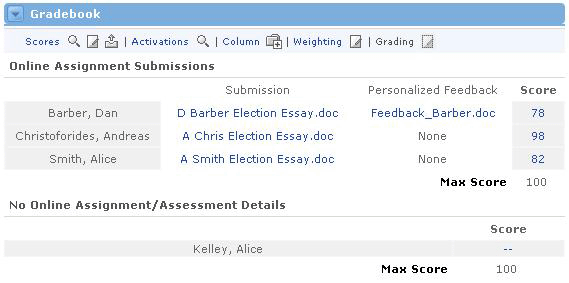
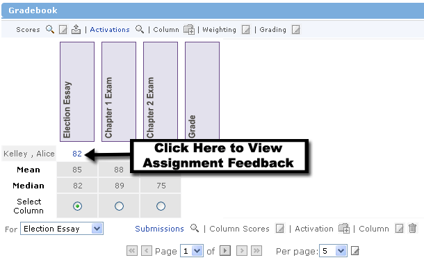
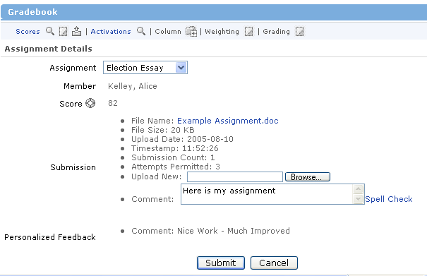

Once the assignment has been downloaded, it is up to each user to complete it and save it to their computer. When this is accomplished, a user can submit the assignment back to the sponsor for grading. To do so, follow these steps:
- From the main Gradebook view, click on the double-dash link for the appropriate assignment column.
2. You will see the Assignment Details screen.
3. Choose the Assignment from the drop-down menu at the top.
4. In the Submission section, use the Browse button to locate the assignment file on your computer.
5. Add any comments, if desired, in the Comment text area.
6. Click the Submit button to send your assignment to the offering sponsor (or instructor).
Providing Feedback to Assignment Submissions
Sponsors, TA or other privileged users can send graded assignment files back to the users in the offering, along with valuable comments and feedback. To do so, a sponsor should follow these steps:
- Go to the main Gradebook view
- To view a user's submitted assignment, click the Submissions link.
- You will now see the Online Assignment Submissions screen.
- Click a file in the Submission column to view a user's assignment submission.
- To submit feedback to a user, click the double-dash link in the Score column for the appropriate assignment.

6. You will now see the Assignment Details screen for sending feedback.
7. Confirm that the Assignment and Member fields are correct.
8. Enter a score in the Score text field.
9. In the Feedback section, type any comments in the Comment text area.
10. To send a graded file back to the user, click the Browse button to locate the file on your computer.
11. Once all fields are finished, click the Submit button.
Viewing Assignment Feedback
After a sponsor has submitted feedback for an assignment, the user can view this feedback through the Gradebook. Follow these steps:
- Go to the Gradebook's main page, and click on the score for the appropriate assignment (see picture below).

2. You will now see the Assignment Details screen.
3. Scroll down to the Feedback section to read any comments left by the sponsor.
4. If the instructor has included a file with feedback, a link to open and/or download the feedback file will be provided. To view the graded file, click on the File Name link.
